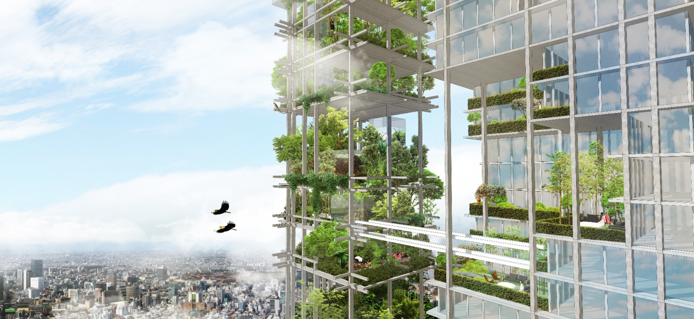
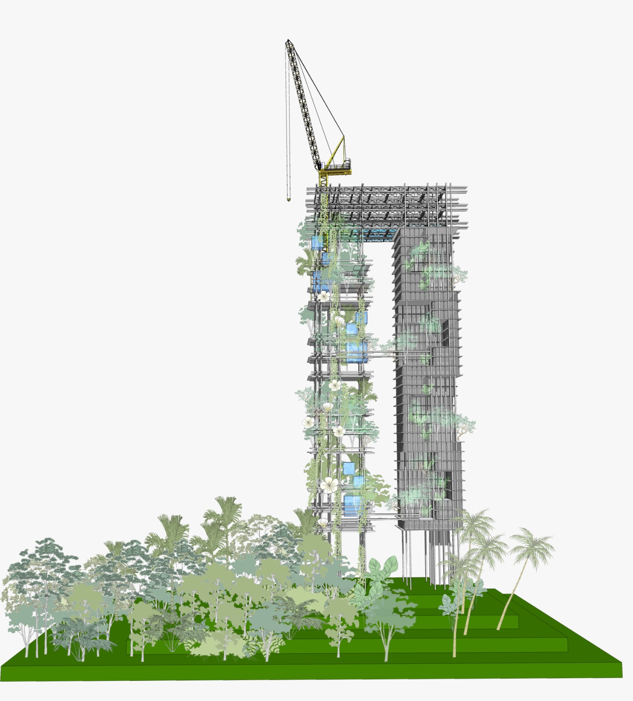
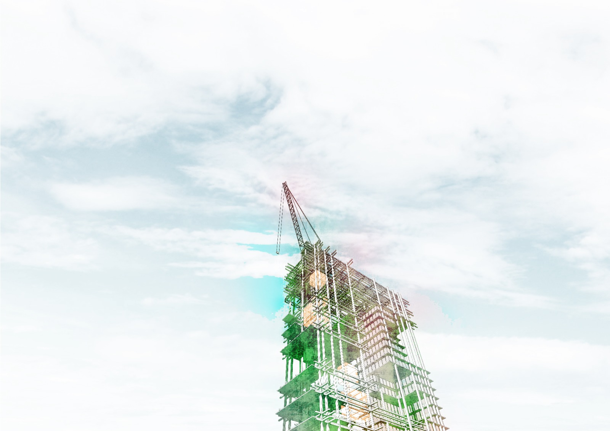
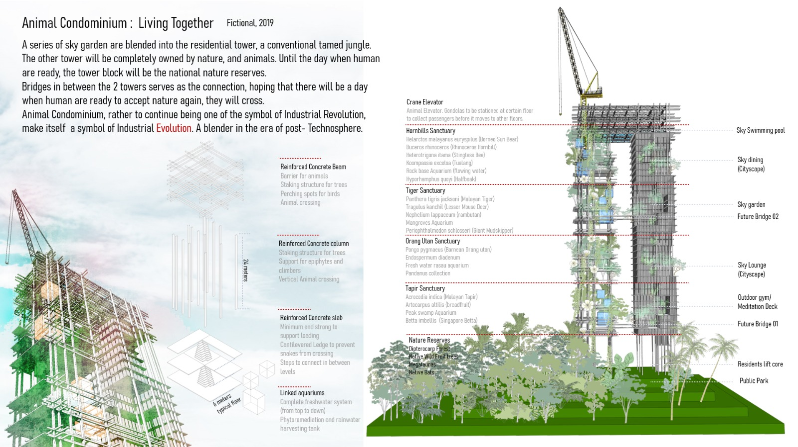

Animal Condominium: Living Together
Fictional, 2019
Re-defining community for multispecies and microclimate communities

Humans may never rewild completely, return to nature, and live with it
again. The proposal therefore asks what might be enough for both—to
establish a bioethic and offer nature a second chance.
A series of sky gardens is blended into the residential tower: a
conventional, tamed jungle. The other tower belongs completely to
nature and animals. Until humans are ready, it remains a national
nature reserve.
Bridges connect the two towers in the hope that, one day, humans will
be ready to cross. Animal Condominium steps back from an ideal
solution to pursue equal status for human and nonhuman life. Rather
than remain a symbol of the Industrial Revolution, it proposes a
symbol of Industrial Evolution—a blender for the post-Technosphere.


